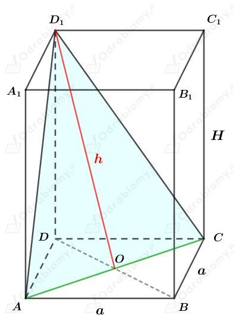

Rysunek:Â Â
Korzystając z funkcji tangens dla trójkąta ABE mamy:
Wyznaczmy pole powierzchni bocznej tego graniastosłupa. Mamy:
Rysunek:Â
Długość odcinka CF to podwojona długość krawędzi bocznej, czyli
Długość odcinka CE to podwojona długość wysokości trójkąta równobocznego o boku długości 4. Mamy więc:
Wyznaczmy długość odcinka OS. Korzystając z twierdzenia Pitagorasa dla trójkąta OCS mamy:
Wyznaczmy długość odcinka GS. Korzystając z twierdzenia Pitagorasa dla trójkąta CGS mamy:
Wyznaczmy pole trójkąta CFS. Mamy:
Wyznaczmy pole trójkąta CES. Mamy:
Wyznaczmy stosunek pola trójkąta CFS do pola trójkąta CES. Mamy:
Rysunek:Â

Podstawa tego graniastosłupa ma pole wynoszące 50 cm2, zatem
Wyznaczmy długość przekątnej tej postawy. Mamy:
Wiemy, że pole trójkąta ACD1 wynosi 65 cm2. Czyli:
Korzystając z twierdzenia Pitagorasa dla trójkąta DOD1 mamy:
Wyznaczmy objętość tego graniastosłupa. Mamy:
Rysunek:Â
Naszkicujmy ścianę FES. Mamy:
Korzystając z twierdzenia o dwusiecznej kąta wewnętrznego trójkąta dla tego trójkąta otrzymujemy:Â
Naszkicujmy ścianę ADS. Mamy:
Korzystając z podobieństwa trójkątów ADS i QPS otrzymujemy:
Podstawiając otrzymaną wcześniej wartość h mamy:
Wyznaczmy pole nad przekrojem BCPQ. Mamy:
Zauważmy, że wysokość trójkąta ABQ opuszczona na bok AB jest równa długości odcinka GF (|GF|=h-c).Â
Wyznaczmy pole powierzchni bocznej tego ostrosłupa. Mamy:
Przekrój BCPQ podzielił powierzchnię boczną na dwie równe części, zatem mamy:
i dalej:
Rozważmy trójkąt prostokątny OES. Wyznaczmy cosinus kąta 2𝛼. Mamy:
zatem
Odp. Kąt nachylenia ściany bocznej do podstawy ma miarę 45o.Â
Rysunek:Â
Pole otrzymanego przekroju, obliczymy jako sumę pól prostokąta EFGH oraz trójkąta HGQ.Â
Zauważmy, żeÂ
Korzystając z twierdzenia Pitagorasa dla trójkąta OPR otrzymujemy:
Wyznaczmy pole prostokąta EFGH. Mamy:Â
Wyznaczymy długość wysokości trójkąta HGQ.Â
Rozważmy przekrój DBS.Â
Zauważmy, że PQ||BS.Â
Korzystając z twierdzenia Talesa mamy:Â
Wyznaczmy pole trójkąta HGQ. Mamy:Â
Wyznaczmy pole otrzymanego przekroju. Mamy:Â
Rysunek:Â
Odcinek DE jest odcinkiem łączącym środki boków trójkąta ABC, zatem
Korzystając z funkcji cotangens dla kąta 𝛼/2 mamy:Â
Korzystając z twierdzenia Pitagorasa dla trójkąta DFS otrzymujemy:
Obie strony równości są dodatnie, więc:
Wyznaczmy pole otrzymanego przekroju. Mamy:
Rysunek:Â
Wiemy, że suma długości wszystkich krawędzi jest równa 60. Mamy zatem:
Założenie:
zatem
Korzystając z twierdzenia Pitagorasa dla trójkąta AOS mamy:
| Obie strony tej równości muszą być dodatnie, więc Uwzględniając również to, że a∈(0, 15) mamy: |
Wyznaczmy wzór funkcji opisujący objętość tego ostrosłupa. Mamy:
więc ostatecznie
Rozpatrzmy funkcję pomocniczą
Funkcja y=√t jest rosnąca, więc funkcje f i V największą wartość przyjmują dla tego samego argumentu.
Wyznaczmy pochodną funkcji f. Mamy:
Wyznaczmy miejsce zerowe pochodnej. Mamy:
Z wyznaczonych liczb tylko liczba 25-5√13 należy do badanego przedziału.Â
Naszkicujmy przybliżony wykres pochodnej f'. Mamy:
Funkcja pochodna f' zmienia znak z dodatniego na ujemny w punkcie a=25-5√13. Zatem
Zatem dla a=25-5√13 funkcja f przyjmuje wartość największą, więc funkcji V również dla a=25-5√13 przyjmuje wartość największą.Â
Wyznaczmy długości krawędzi tego ostrosłupa. Mamy:
oraz
Rysunek:Â
Wiemy, że suma trzech krawędzi wychodzących z jednego wierzchołka jest równa P, czyli
Założenie:
czyli
Wyznaczmy wzór funkcji opisujący objętość tego graniastosłupa. Mamy:
Ostatecznie otrzymaliśmy:
Wyznaczmy pochodną funkcji V. Mamy:
Wyznaczmy miejsce zerowe pochodnej. Mamy:
Z otrzymanych liczb, tylko liczba P/3 należy do badanego przedziału.Â
Funkcja pochodna dla argumentu a=P/3 zmienia znak z dodatniego na ujemny, więc funkcja V osiąga w tym punkcie wartość największą.Â
Wyznaczmy taką największą objętość. Mamy: